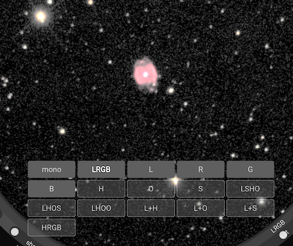
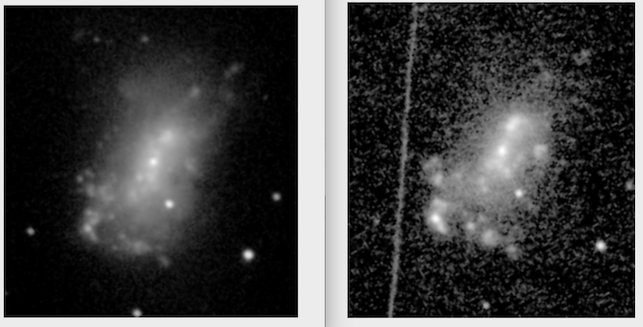

Filters and colour
This section explores how Jocular can be used with multiple filters to synthesise colour images.
While Jocular does not support one-shot-colour cameras in any meaningful way (yet), it does support multispectral processing i.e. generation of coloured images from a sequence of monochrome-plus-filtered images. This approach can be used to create RGB and LRGB images as well as for the combination of narrowband filters e.g. SHO, HOS, HRGB.
Every monochrome sub that is either captured directly or otherwise received by Jocular has a filter property which indicates what filter was used during the capture. In the case of subs arriving in the watched directory, Jocular attempts to access this information from the FITS header, or failing that from the file name. Jocular can also read the filter information from the user if the appropriate from user option is set in the watched camera settings. The background colour of the sub number at the top of the eyepiece provides a visual indication of the filter used.
Once Jocular has a stack of subs with known filters for each one, on clicking the spectral mode button in the lower-right quadrant (initally set to mono, but set to lrgb in the image below), a menu containing all the possible filter combinations appears. Those that are highlighted are legal options given the subs that are currently on the stack.
For instance, in the image of NGC 40 below, a user has collected subs through L, R, G and B filters, so has the option of viewing the DSO in mono, in LRGB, or examining the stack made up of L, R, G or B subs only. These are all the possible options for this stack.

The image below of the irregular galaxy NGC 4449 contains luminosity (L) and H-alpha (H) subs. Here’s we’re viewing the L+H combination (indicating that the H-alpha is mapped to a different layer from the luminosity).
We can also view the L (left) and H (right) contributions separately:

Colour manipulations
Jocular provides two controls on the main eyepiece ring to modify colour: saturation and colour stretch, labelled sat and S respectively. However, the underlying colour model separated luminosity (L) from chrominance, so all the normal luminosity controls (B/W/stretch etc) also affect the image displayed.